Workflows and your own agents. The jobs Rasoi does every week, drawn once and run by themselves, and a playground where Rasoi's own people build them.
Dr. Rajat Dandekar · Vizuara
Lecture 5 gave Ask Rasoi a loop. Lecture 6 asks when we do not want the loop.
/studio.You have been at Rasoi six weeks. Ask Rasoi works. Kavita uses it every day.
But look at the week. Every Monday Kavita checks which items are below reorder level and raises requests.
Every delivery, Neha counts the goods at the gate and records them.
Every day, dealers email orders that someone reads and types in.
Anand Patil, plant head, after the Ask Rasoi demo.
The question for today
When the steps are known, should a model choose them again every time?
And when they are not known, how does someone at Rasoi build an agent of their own, without writing a harness?
Two ways to do the same job. What each costs, and when to use which.
Both call the same 15 tools from Lecture 4. Only the chooser differs: your drawing, or the model.
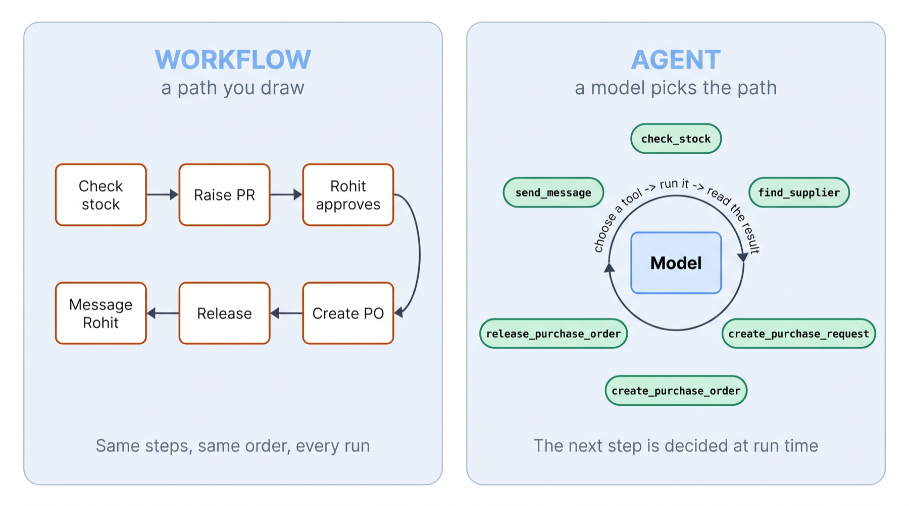
The task: check GSK-SIL-05L and WHS-STD-01; for anything below reorder level with nothing on order, raise a PR for three times the reorder level on PRD-07, need-by 9 Nov, and tell Rohit.
The workflow: the Studio's “Reorder when low”, cut at the PR. Scrub its ten runs: one path.
Ask Rasoi, stage agent, the same words. Scrub its runs. + means it committed (confirm=true).
experiments/logs/wf_vs_agent.json.Same task, ten runs each. Right outcome = exactly one PR, 36,000 × WHS-STD-01 on PRD-07 for 9 Nov, and @rohit told its number.
Ask Rasoi at temperature 0: also right every time, but by two different paths.
At temperature 1: the same.
logs/wf_vs_agent.json (stats).The workflow makes no model call: the engine fills templates and calls tools.
Ask Rasoi reads the system prompt, all 15 tool schemas and the history on every turn, about six model calls per run, and needed Kavita's “yes” before it committed.
Both did the same tool work in Bahi. Engine time is milliseconds; the agent's time is the model thinking.
logs/wf_vs_agent.json.Rohit asks: “why did it order 36,000 whistles?”
quantity = {{ trigger.reorder_level * 3 }}SV-PUN-0017 if item is WHS-STD-01.reorder_level: 12000.Two questions about the job.
Are the steps known? If the next step depends on what you find, a drawing needs a branch for every case. That is an agent's job.
Is the input a record or free text? A form gives fields; an email needs a model to read it.
Click each job at Rasoi.
1. Neha's goods receipt: workflow or agent?
Workflow. A form gives the PO and the count; the steps are always receive → read status → tell Kavita.
2. Both got the reorder right 10 of 10. Why prefer the workflow for it?
₹0 and milliseconds per run instead of about ₹1.18 and 26 s, one fixed path Rohit can sign off, and no “yes” needed from Kavita.
3. “Can we buy from Shakti Seals?” Why not a workflow?
Which lookups matter depends on each answer: not in the master, no certificate, §6.2. A drawing would need every branch in advance.
4. Where does a model belong inside a workflow?
Only where the input is free text or the steps open up: an LLM node to read an email, an agent node for a question.
Trigger, nodes, edges, data, branches, the approval wait, errors and re-runs. One part at a time, on Rasoi's jobs.
We take each one in turn. This is the map.
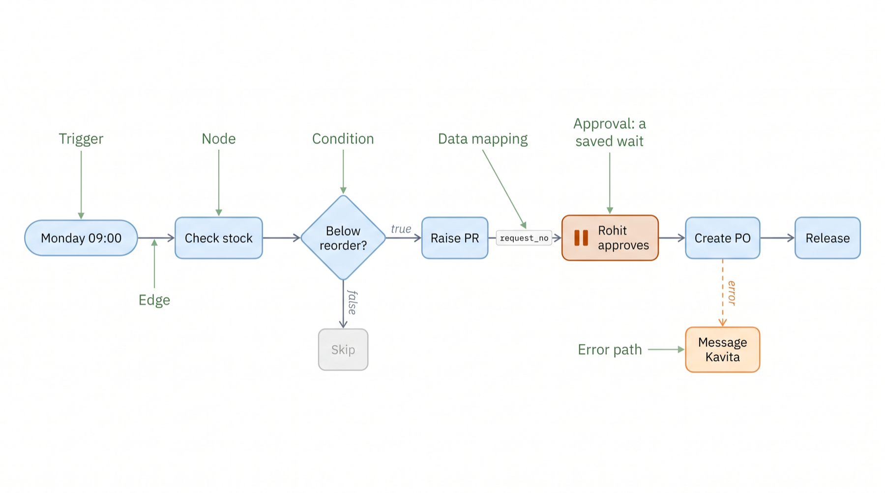
Manual: the Run button. Schedule: every Monday 09:00. Event: stock falls below its reorder level. Form: Neha's goods-arrived form. Chat or email: a message comes in.
In the Studio the event trigger calls check_stock on its items. On a fresh Rasoi it fires for WHS-STD-01, 8,000 free against 12,000, and passes {item_code, free, on_order, reorder_level, cover_days} on.
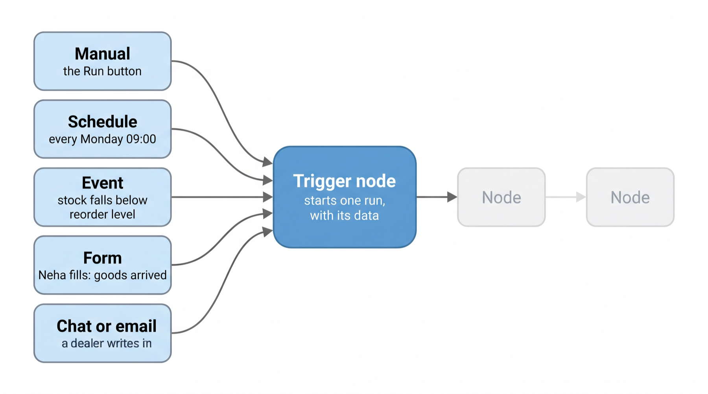
logs/templates_fresh.json.“As one person” matters. "as": "NDESAI" acts with Neha's Bahi permissions, nobody else's: she can receive goods, she cannot approve a PR. Only "as": "RMEHTA" can sign Rohit's approvals.
The Commit switch is confirm: off, a writing tool only previews. A template never sets it.
| Node | Type | Tool | As | Commit |
|---|---|---|---|---|
| Start | trigger | manual | ||
| Check stock | tool | check_stock | KJOSHI | read only |
| Raise the PR | tool | create_purchase_request | KJOSHI | on |
| Rohit approves | approval | order_status | RMEHTA signs | |
| Order from Deccan | tool | create_purchase_order | KJOSHI | on |
| Release to supplier | tool | release_purchase_order | KJOSHI | no preview |
| Tell Rohit | message | send_message | KJOSHI |
The Studio's “Diwali gasket order” template, node by node (studio/templates.py).
In Lecture 4 we wrapped Bahi's terse services into tools, one per business activity, with previews, keys and receipts.
Now each tool is one card on the canvas. A person can draw “raise the PR” without knowing the seven services behind it.
Drawn on raw services instead, the same job is dozens of nodes and every screen trap (PRD-05, GST18-INTRA) is the drawer's problem.
out: the node finished.true / false: a condition chose a side.rejected: the approver said no.error: the node failed; follow this edge instead of stopping.“Reorder when low”, from the Studio. A node is skipped when every edge into it has settled and none was taken; skipping flows downstream.
{{nodes.pr.request_no}} in a field means: the request_no of node pr's output, filled in when this node runs.Whole-field rule. A field that is exactly one {{ }} keeps the value's type: 269040.0 stays a number.
Text around it: each {{ }} becomes text in the string.
A small expression is allowed: {{ trigger.reorder_level * 3 }}.
A missing field is an error that names it.
logs/templates_fresh.json.true or false. Only that side runs.Whistles: below reorder. The PR side runs.
Gaskets: 66,000 free against 30,000. The PR side is skipped; Kavita gets “fine”.
Every branch you draw is a case you thought of in advance. The case you did not think of has no edge.
check_stock on a fresh Rasoi, logs/probe.json.It reads the document's real status from Bahi with order_status. APPROVED: carry on. WAITING: save and stop. REJECTED: the rejected port.
Rohit signs in his own inbox, as himself. The workflow never signs for him.
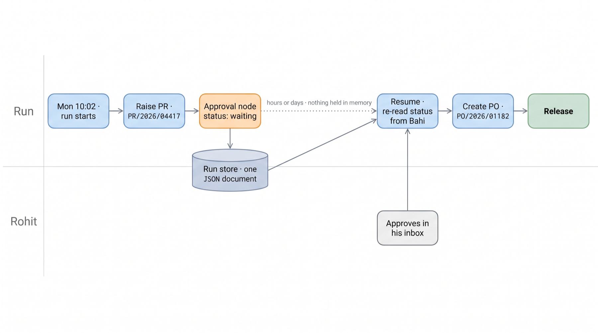
This is the run of the Diwali gasket order, saved while it waits. Every node's output so far, the edges taken, and what it waits for.
The web server can restart. Rohit can take two days. resume re-reads Bahi; if he has not signed, it simply waits again.
In the notebook you save it to a file, delete the Python object, approve as Rohit, and resume with a brand-new engine.
A tool that returns ok: false makes its node an error, with the tool's own message and next step.
With an error edge drawn, the run follows it: tell Kavita, or try another way. Without one, the run stops, failed, and names the node.
A warning stops the run too, by default: PRD-05 is closed, so a PO there saves as Draft. A person should look.
Real messages from our runs
PO/2026/01167 is not open for receipt (status CL). Only a RELEASED order can be received. Check order_status.Bahi did not reply in time (pr_submit: no reply within 30 s (the server may or may not have saved)). Check with order_status before trying again.Cost centre PRD-05 is CLOSED. Ask the user for an open one (check_budget lists them).The worst error: Bahi saved the PR, then timed out before it answered. The node sees a failure. The PR exists.
A retry asks again with the same arguments. Because the tool's key comes from the content, it finds the PR instead of raising a second one.
pr_save and pr_submit is now handled inside the tool: it reads the PR back and submits it, so the first call already returns WAITING FOR APPROVAL. The retry finds the same PR.| Bahi times out after… | First call | Retry | PRs in Bahi |
|---|---|---|---|
pr_submit commits | ok=false TIMEOUT | already_done WAITING FOR APPROVAL | 1 PR/2026/04417 PA |
pr_save commits | ok=true WAITING FOR APPROVAL | already_done WAITING FOR APPROVAL | 1 PR/2026/04417 PA |
| no fault, need-by changed | PR/2026/04417 | PR/2026/04418 | 2 a different request |
From logs/retry_idem.json. The Studio engine has no retry setting; NB6's engine adds retries on tool nodes, and only for time-outs.
The key is a hash of what the document is: user, item, quantity, cost centre, date. Never a random uuid4(), or every retry looks new.
The workflow engine adds nothing here: it gets this for free because every write goes through the toolbox.
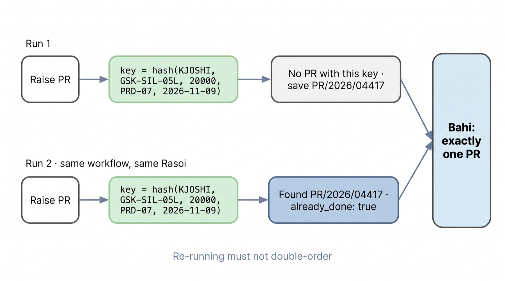
The second run found what the first made, or stopped. Nothing was ordered or received twice.
already_done). But the Tell Rohit node ran again (Diwali and Dealer rows): Rohit got the same message twice. A message has no idempotency key. Put a condition before it, or accept the repeat.1. Node pr output has no po_no. What happens to {{nodes.pr.po_no}}?
The node errors with “nodes.pr has no field 'po_no'” and the run stops (or follows the error edge). Nothing empty reaches Bahi.
2. Why does an approval not just loop until Rohit signs?
He may take days; a loop dies with the process. A saved run survives restarts and costs nothing while it waits.
3. A condition's false side has no edge. What runs?
Nothing more: the true side is skipped, and the run ends done.
4. Who signs Rohit's approval in a workflow?
Rohit, in his inbox, with his own permissions. The workflow only reads the status.
An LLM node to read what no tool can, and an agent node: your own agent, as one card.
Sharma Home Appliances emails for 4,000 spare gaskets by 12 November. No tool can read an email.
The model returns four fields. Everything after it is fixed: find the item, raise the PR, tell Rohit.
One model call, about 250 tokens. The model reads; tools do.
logs/templates_fresh.json.Three habits for an LLM node.
fields: ["item", "quantity", "need_by", "dealer"]. The engine checks every field came back, or the node errors.find_item turns words into GSK-SIL-05L. Never let a model invent a code.You choose the person it acts as, so it has their permissions.
may_commit off: every write it tries is forced to a preview, whatever the model asks.
max_steps stops a loop that runs away.
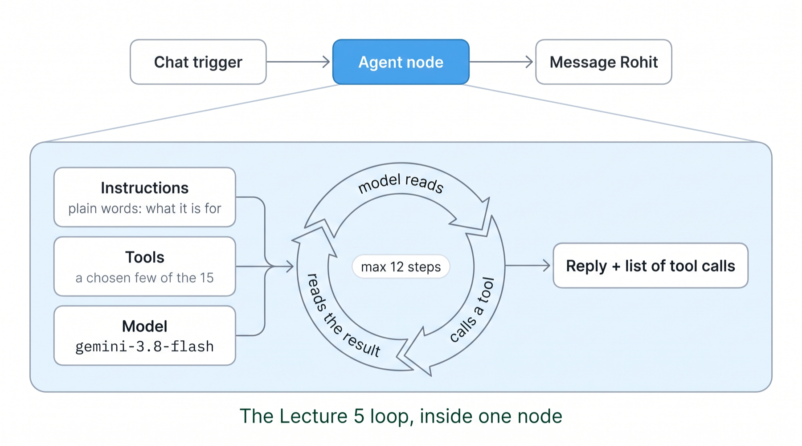
Six tools of fifteen: it cannot make a PO, release or approve anything, whatever it is asked.
logs/templates_fresh.json.1. The LLM node returns quantity: "4,000" as text. What would you do?
Ask for a whole number in the prompt, and let the tool's schema check reject a string it cannot turn into an integer.
2. Agent node or LLM node for “read the dealer's email”?
LLM node: one call, fixed fields. Nothing to decide, so no loop.
3. Your agent node has may_commit: false and the model calls create_purchase_request(confirm=true). What happens?
The engine changes it to confirm=false: a preview. The switch wins over the model.
4. How is the agent node different from Ask Rasoi?
Same loop. You wrote its instructions, picked its tools and its person, and placed it in a workflow.
A workflow engine is a short loop. You write one in the notebook in about 80 lines.
Stop when nothing is ready (done), a node failed with no error edge (failed), or an approval waits (waiting).
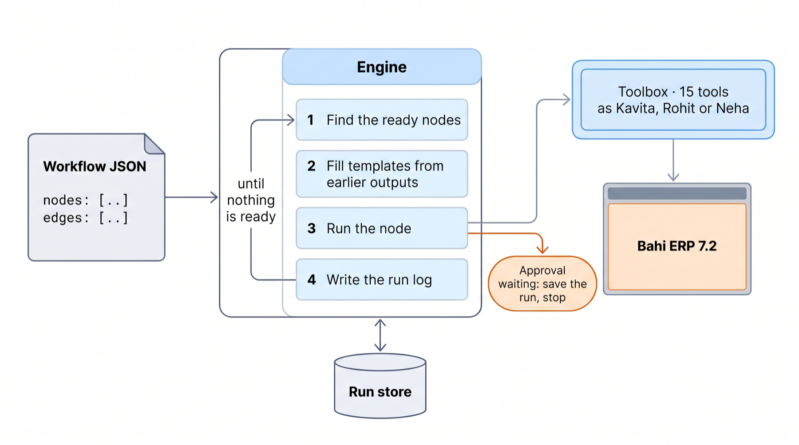
From NB6's MiniEngine. The Studio's engine is the same shape, with more node types and a run store.
A run is a plain dict, so it saves as JSON.
The port decides which edges are taken; the next ready() skips the rest.
The Studio's engine on a fresh Rasoi. Drag the slider: each event lights a node; the right panel is that node's real output.
A canvas on Rasoi's home page. Five ready workflows. Every one run on a fresh Rasoi, with the numbers on the next plates.
A page with a palette of nodes, a canvas, and a run panel.
What you draw is saved as workflow JSON, the format you just learned.
The engine runs it on your own Rasoi, through the same toolbox Ask Rasoi uses, so every write previews, carries a key and acts with the person's permissions.
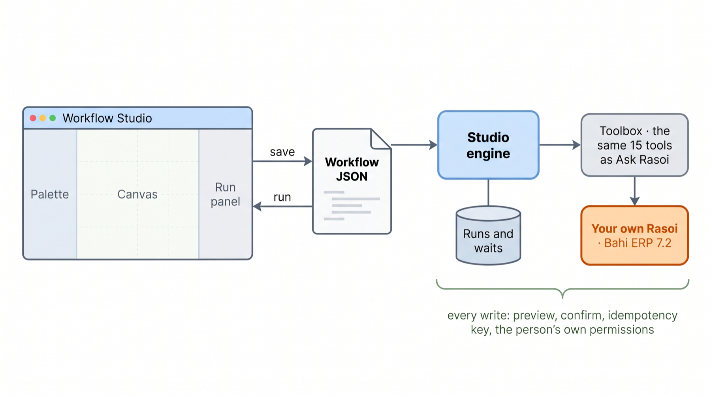
bahi/experience/studio/.Open /studio: you get your own Rasoi and five ready workflows, plus a blank canvas.
Each card says its trigger and lists its nodes. “Use” copies it into your own workflows, to change as you like.
The palette on the left groups the node types: triggers, logic, AI, messaging, and the 15 tools.
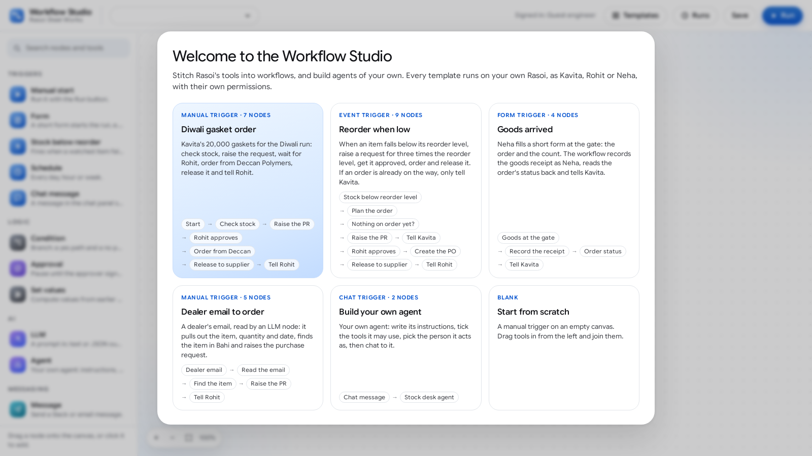
studio/shots/00_welcome_templates.png).Press Run. Three nodes go green; “Rohit approves” turns purple: waiting.
Why it waits: PR/2026/04417 is estimated at ₹2,69,040 (20,000 × ₹11.40 + 18%), above Kavita's ₹2,50,000.
The run is saved; it carries on from “Rohit approves” once he signs. “Check again” is resume: it re-reads Bahi and waits again if nobody signed.
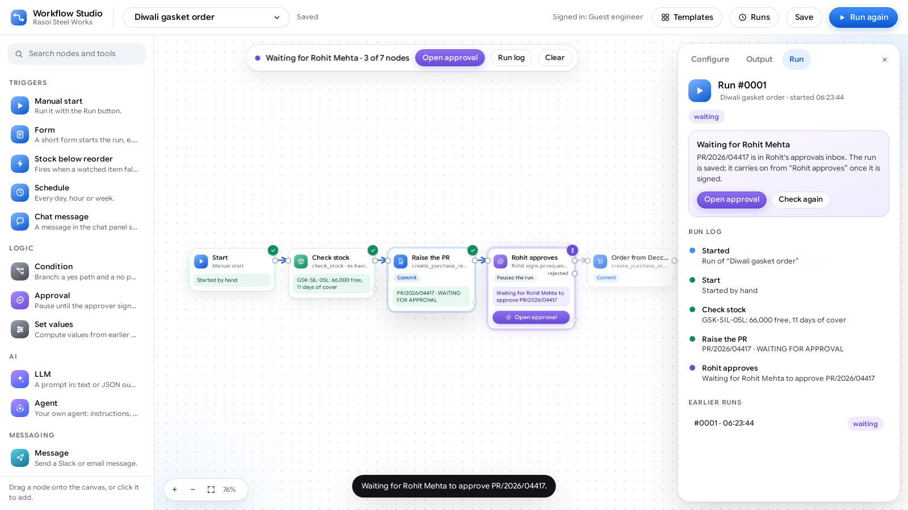
studio/shots/03_waiting_for_rohit.png).Left: Rohit's approvals inbox inside the Studio. Right: every node done, the PO node's filled inputs and real output.
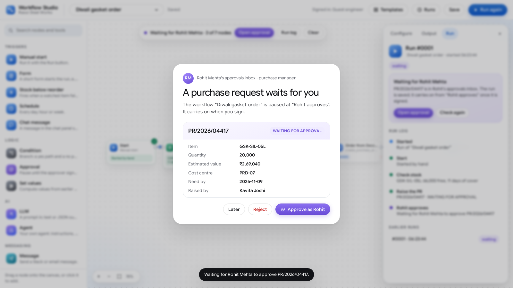
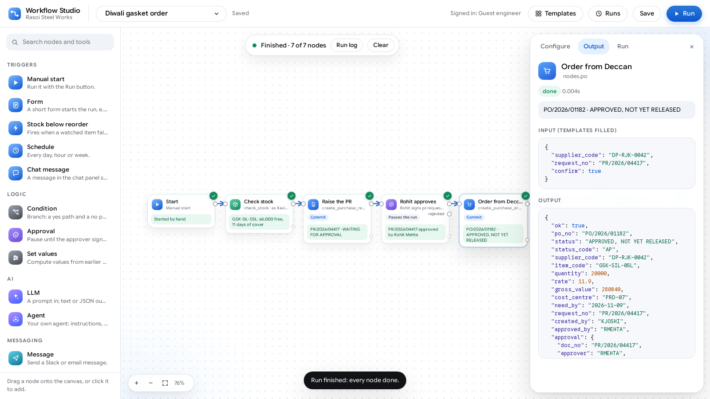
Event trigger on GSK-SIL-05L and WHS-STD-01. A set node plans the order; a condition checks nothing is already on order.
“Check now” fires the event trigger: whistles are below reorder.
The condition went yes; “Tell Kavita” on the no side is faded: skipped.
The run log on the right reads top to bottom like the story: plan, PR, wait, sign, PO, release, tell Rohit.
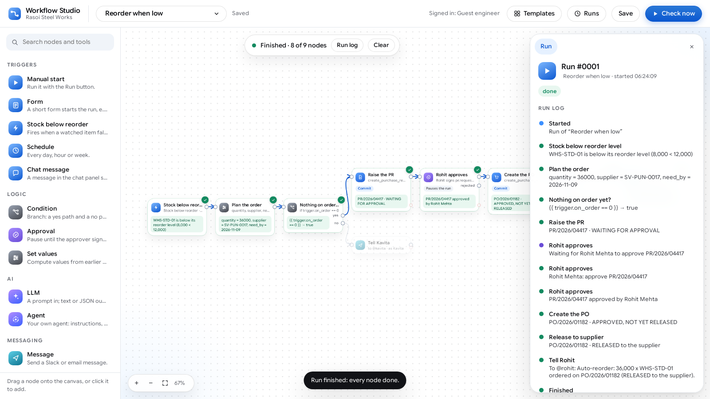
studio/shots/07_reorder_branch_done.png.Neha fills a three-field form at the gate: PO, count, vehicle.
The receipt is recorded as Neha: GRN/2026/30001 for 40,000 cartons on PO/2026/01167, and the order closes.
Run it twice: the second run stops at the receipt. The order is CLOSED, so nothing is received twice.
The LLM node reads; four fixed nodes act. Scrub to “extract” to see the four fields it returned.
Click “Read the email”. The panel shows the prompt with the email filled in, the model, its tokens, and the JSON it returned.
A replayed call is marked “replayed from the cassette”: the class can run it with no key.
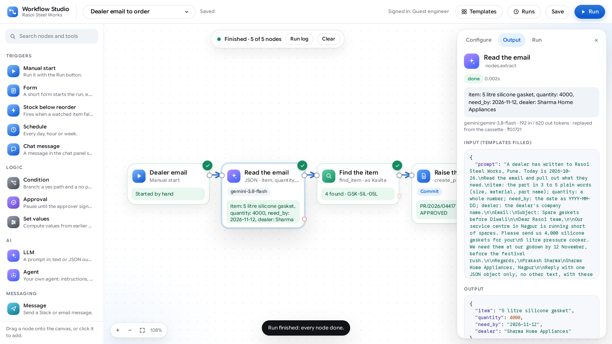
studio/shots/09_dealer_email_llm.png.A chat trigger and one agent node. In the Studio you edit three things in its panel:
Then chat to it in the run panel. Our run: two turns, one preview, one PR waiting for Rohit.
Every agent anyone at Rasoi builds is this much JSON: no harness code.
Left: the agent node's Configure panel: six tools ticked, “May commit writes” on, the model, max tool calls. Right: its Chat tab.
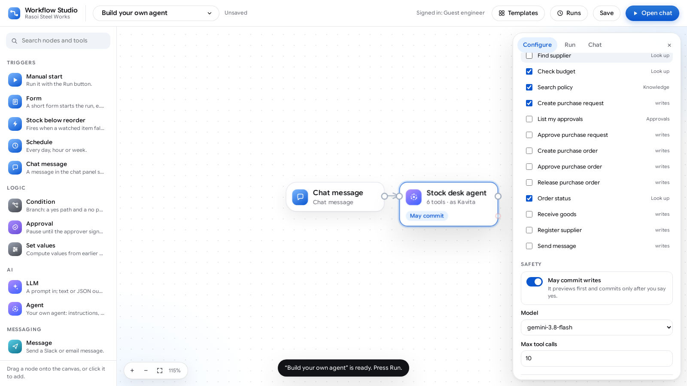
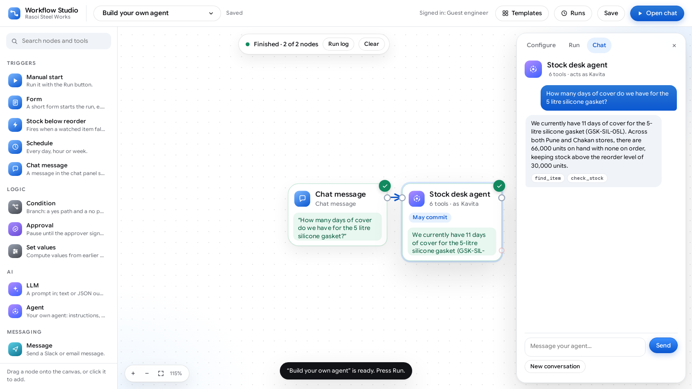
create_purchase_request and ask it to buy whistles. It cannot: the tool is not in its list, so the model never sees it.The Studio's own engine, on Modal. Rohit's approval signed as Rohit where a run waited.
find_item). About 24,000 tokens, ₹1.18 and 26 s per run, 6 model calls, and a “yes” from Kavita.Open the Studio, build one, then do it again for your own module.
/studio. You get your own Rasoi.create_purchase_request, ask it to buy whistles, and read what it says.{{ trigger.reorder_level * 3 }} → raise the PR with Commit off → message Kavita with the preview's estimated value.Colab, replay mode, no key needed.
NB6_the_studio.ipynb| § | You build | Exercise |
|---|---|---|
| 1–2 | The workflow as JSON; fill() and the whole-field rule | 1 · list indexes |
| 3 | MiniEngine: ready, step, run log; the gasket order on the toolbox | |
| 4 | A condition node: whistles vs gaskets | 2 · the false branch |
| 5 | The approval node: save to a file, approve as Rohit, resume with a new engine | 3 · the rejected port |
| 6 | A time-out after commit, a retry, a second run: still one PR | 4 · content key vs uuid4 |
| 7 | An LLM node (the dealer's email) and an agent node (a stock desk) | 5 · a new field |
| 8 | The Studio's own engine on the same JSON |
Two workflows and one agent for your own module kit.
A6.md.The Studio sits beside the chat on Rasoi's home page, for the people who work there.
Its workflows call the toolbox directly, through the engine; only LLM and agent nodes use a model, and an agent node is the harness of Lecture 5 in one card.
Lectures 1–6: the After, the brain, the memory, the hands, the loop, and now the Studio.
Workflows now run with nobody watching. Whom do they act as, who checks them, and what happens when one breaks at 2 AM? Identity, approvals, evals, traces, recovery, deploy.